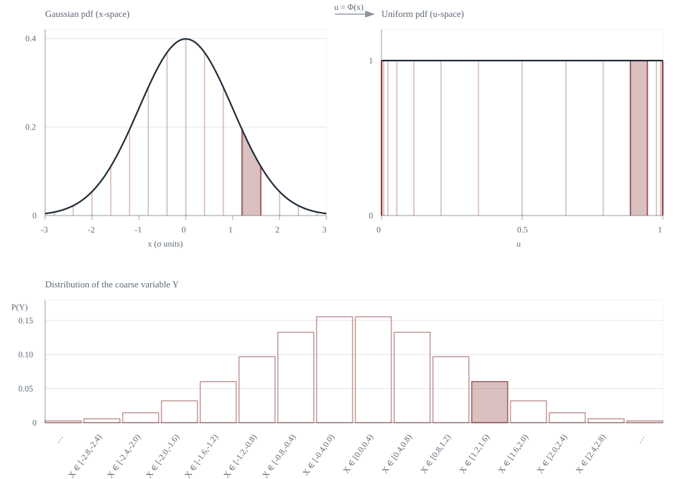

Uniform Representation via quantile mapping
We can start with the “uniform representation” idea familiar from probability theory: any distribution can be generated from a single random seed (as long as it has a large enough state space). Let
In one dimension, $\psi$ can be the quantile map $F^{-1}$, so $X=F^{-1}(U)$. More generally, you can treat $\psi$ as a measurable map that pushes the Lebesgue measure forward to whatever law you want, but for concreteness the below specializes to the quantile map.
Discretized/coarse observation are a partitioning map
Suppose we don’t observe $U$ precisely; we only observe which “bucket” it falls into. Formally, let $f$ map the elements in $[0,1]$ to categories $\{1,\dots,m\}$ and define $Y := f(U)$, the output. The fibers (inverse images of each category $j$) $A_j := f^{-1}(j)$ partition $[0,1]$.
Fiber-size form of Shannon entropy
Because $U$ is uniform, the probability of a state $u$ “being indistinguishable under $f$” is just the Lebesgue measure of the fiber that contains $u$:
Plugging this into the definition yields:
Read informally: Shannon entropy is the average surprisal of the probability of each indistinguishability class.
Coarse Graining via Kernel
Define the partitioning (equivalence) kernel induced by $f$:
This is the kernel that naturally lies on the output space, but pulled back to the latent space: $K_f(u,u')=1$ exactly when the observed $j=f(u)$ cannot tell $u$ and $u'$ apart and otherwise it is 0.
We can define “typicality” to be the kernel mass around a point, which functions as the total similarity-mass of that state across the entire space:
Since $K_f(u,u')$ is $1$ precisely on the fiber $f^{-1}(f(u))$, this simplifies to $\tau_f(u)=\lambda(f^{-1}(f(u)))=p_{f(u)}$. Substitute into the fiber-size identity:
So we don’t push the measure to $\{1,\dots,m\}$; keep the base measure on $[0,1]$ and move the coarsening map inside the logarithm via the kernel. This gives us a kerneled form of Shannon entropy.
Moving from partitions to SS-entropy
Partition kernels are $0$–$1$. Similarity-sensitive entropy generalizes by allowing a graded similarity kernel $K(x,x')\in[0,1]$ (with $K(x,x)=1$) on a state space with distribution $\mu$.
In words, SS-entropy is expected surprisal of the typicality (not probability) under the similarity notion $K$. Partition kernels recover ordinary Shannon entropy for the corresponding coarse variable, while intermediate kernels interpolate between “everything is distinct” and “many things are similar.”
A benefit of this formulation is that you can define similarity where the semantics are natural to specify, then transport it through a change of variables by pulling the kernel back, perhaps into a vector space where you can more easily define the probability distribution.
Example: a partition kernel on $\mathbb R$, pulled back to $[0,1]$
To match the latent-uniform idea above, represent the Gaussian as $X=\psi(U)$ with $U\sim\mathrm{Unif}[0,1]$. Here $\psi$ is a quantile map: if $F$ is the CDF of $X$, then we can use $\psi=F^{-1}$ (and $U=F(X)$).
Now set the kernel in $x$-space by binning. Let's pick the bin width $\Delta=0.4\sigma$ and let $g_\Delta:\mathbb R\to\mathbb Z$ record which interval of length $\Delta$ contains $x$ (centering the bins so the edge is at the mean). Define the coarse variable $$Y:=g_\Delta(X)=g_\Delta(\psi(U)).$$
This induces a partition kernel on $\mathbb R$:
Typicality is the probability mass of your bin, $\tau_\Delta(x)=\mathbb P(g_\Delta(X')=g_\Delta(x))$, so SS-entropy reduces to an ordinary Shannon entropy: $$H_{K_\Delta}(\mu_X)=H(Y).$$
To express the same coarse-graining on the latent space, define $f_\Delta(u):=g_\Delta(\psi(u))$ and pull the kernel back: $$\widetilde K_\Delta(u,u') := \mathbf 1\{f_\Delta(u)=f_\Delta(u')\}=K_\Delta(\psi(u),\psi(u')).$$ Since $\psi$ pushes Lebesgue measure $\lambda$ forward to $\mu_X$, this is just a change of variables, so the entropy is unchanged: $$H_{K_\Delta}(\mu_X)=H_{\widetilde K_\Delta}(\lambda).$$
In $u$-space the bin boundaries become quantiles $u_j=\psi^{-1}(m+j\Delta)=F(m+j\Delta)$, which crowd near $0$ and $1$ because the Gaussian tails have low density.

Relationship to differential entropy
The “infinite distinguishability" limit corresponds to a kernel that only matches a point to itself:
If $\mu$ is continuous, then $\mu(\{x\})=0$ for every $x$, so $\tau(x)=0$ almost everywhere and $-\log \tau(x)=+\infty$. In SS-entropy terms: considering each event on a continuous space to be uniquely distinct leads to infinite surprisal. And it should! Other than for (very useful) computational convenience, there is no need for a truly infinitely-distinguishable state space. In practice, we always have a finite resolution of measurement, and the kernel can theoretically encode that resolution.
Differential entropy can be understood as what remains after you subtract a kernel-dependent distinguishability "baseline" from a finite-distinguishability family of kernels with a tiny scale $\varepsilon$. For example, take the kernel $$K_\varepsilon(x,x') := \exp\left(-\frac{|x-x'|^2}{2\varepsilon^2}\right).$$ Loosely, typicality would behave like $\tau_\varepsilon(x)\approx \varepsilon f(x)$
SS-entropy makes the kernel explicit letting you then move it to other spaces; differential entropy is the density-dependent part you get by removing the kernel-dependent resolution term, which makes it not invariant to change of variables.